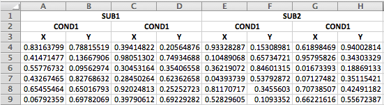

Download the Rmd notebook for this example
library(tidyverse)A student on our help forum recently asked for help making a wide-format dataset long. When I tried to load the data, I realised the first three rows were all header rows. Here’s the code I wrote to deal with it.
First, I’ll make a small CSV “file” below. In a typical case, you’d read the data in from a file.
demo_csv <- "SUB1, SUB1, SUB1, SUB1, SUB2, SUB2, SUB2, SUB2, SUB3, SUB3, SUB3, SUB3
COND1, COND1, COND2, COND2, COND1, COND1, COND2, COND2, COND1, COND1, COND2, COND2
X, Y, X, Y, X, Y, X, Y, X, Y, X, Y
10, 15, 6, 2, 42, 4, 32, 5, 34, 54, 12, 19
4, 43, 7, 34, 56, 43, 2, 33, 29, 37, 2, 28
77, 12, 14, 75, 36, 85, 3, 2, 33, 44, 10, 9"If you try to read in this data, you’ll get an error message about the duplicate column names.
data <- read_csv(demo_csv)Duplicated column names deduplicated: 'SUB1' => 'SUB1_1' [2], 'SUB1' => 'SUB1_2' [3]...
Instead, you should read in just the header rows by setting n_max equal to the number of header rows and col_names to FALSE.
data_head <- read_csv(demo_csv, n_max = 3, col_names = FALSE)You will get a table that looks like this:
| X1 | X2 | X3 | X4 | X5 | X6 | X7 | X8 | X9 | X10 | X11 | X12 |
|---|---|---|---|---|---|---|---|---|---|---|---|
| SUB1 | SUB1 | SUB1 | SUB1 | SUB2 | SUB2 | SUB2 | SUB2 | SUB3 | SUB3 | SUB3 | SUB3 |
| COND1 | COND1 | COND2 | COND2 | COND1 | COND1 | COND2 | COND2 | COND1 | COND1 | COND2 | COND2 |
| X | Y | X | Y | X | Y | X | Y | X | Y | X | Y |
You can then transpose the table (rotate it) and make new header names by pasting together the names of the three headers.
new_names <- data_head %>%
t() %>% # transposes the data and turns it into a matrix
as_tibble() %>% # turn it back to a tibble
mutate(name = paste(V1, V2, V3, sep = "_")) %>%
pull(name)Now you can read in the data without the three header rows. Use skip to skip the headers and set col_names to FALSE.
data <- read_csv(demo_csv, skip = 3, col_names = FALSE)Then set the column names to the new names.
names(data) <- new_namesIf you have an excel file that merges the duplicate headers across rows, it’s a little trickier, but still do-able.

The first steps is the same: read in the first three rows.
data_head <- readxl::read_excel("3headers_demo.xlsx", n_max = 3, col_names = FALSE)| X__1 | X__2 | X__3 | X__4 | X__5 | X__6 | X__7 | X__8 |
|---|---|---|---|---|---|---|---|
| SUB1 | NA | NA | NA | SUB2 | NA | NA | NA |
| COND1 | NA | COND1 | NA | COND1 | NA | COND1 | NA |
| X | Y | X | Y | X | Y | X | Y |
The function below starts at the top and fills in any missing data with the value in the previous row. You’ll have to define this function in your script befor you run the next part.
fillHeaders <- function(header_table) {
for (row in 2:nrow(header_table)) {
this_row <- header_table[row, ]
last_row <- header_table[row-1, ]
new_row <- ifelse(is.na(this_row), last_row, this_row)
header_table[row, ] <- new_row
}
header_table
}Just run the fillHeaders() function after you transpose as re-tibble the header data, then continue generating the pasted name the same as above.
new_names <- data_head %>%
t() %>% # transposes the data and turns it into a matrix
as_tibble() %>% # turn it back to a tibble
fillHeaders() %>% # fill in missing headers
mutate(name = paste(V1, V2, V3, sep = "_")) %>%
pull(name)If your data are set up with multiple headers, you’ll probably want to change them from wide to long format. Here’s a quick example how to use gather, separate, and spread to do this with variable names like above.
data_long <- data %>%
# add row IDs if each row doesn't already have uniquely identifying column(s)
mutate(row = 1:nrow(.)) %>%
# gather creates a column of variable names and a column of values
gather("var", "val", new_names) %>%
# split the variable names into their three component parts
separate(var, c("subID", "condition", "coord"), sep = "_") %>%
# put X and Y in separate columns
spread(coord, val)| SUB1_COND2_X | SUB1_COND2_Y | SUB2_COND2_X | SUB2_COND2_Y | SUB3_COND1_X | SUB3_COND1_Y | SUB3_COND2_X | SUB3_COND2_Y | row | subID | condition | X | Y |
|---|---|---|---|---|---|---|---|---|---|---|---|---|
| 6 | 2 | 32 | 5 | 34 | 54 | 12 | 19 | 1 | SUB1 | COND1 | 10 | 15 |
| 6 | 2 | 32 | 5 | 34 | 54 | 12 | 19 | 1 | SUB2 | COND1 | 42 | 4 |
| 7 | 34 | 2 | 33 | 29 | 37 | 2 | 28 | 2 | SUB1 | COND1 | 4 | 43 |
| 7 | 34 | 2 | 33 | 29 | 37 | 2 | 28 | 2 | SUB2 | COND1 | 56 | 43 |
| 14 | 75 | 3 | 2 | 33 | 44 | 10 | 9 | 3 | SUB1 | COND1 | 77 | 12 |
| 14 | 75 | 3 | 2 | 33 | 44 | 10 | 9 | 3 | SUB2 | COND1 | 36 | 85 |